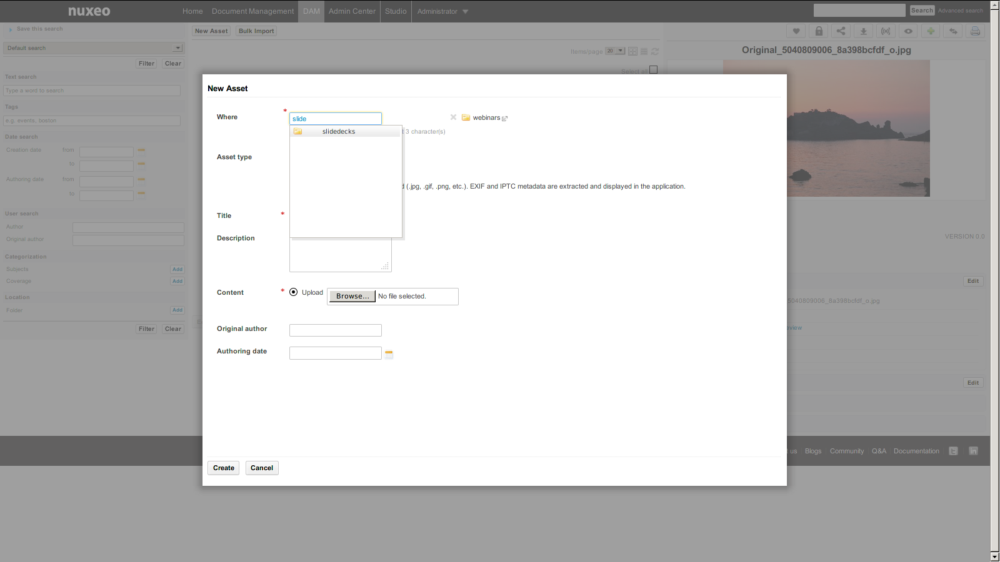
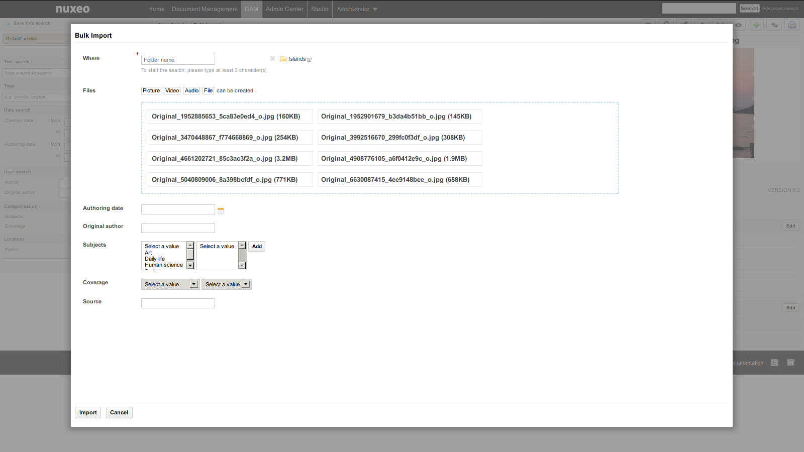
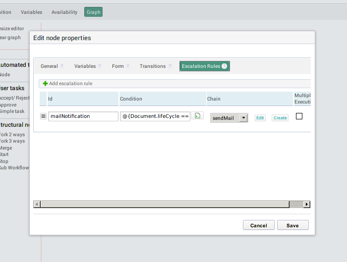
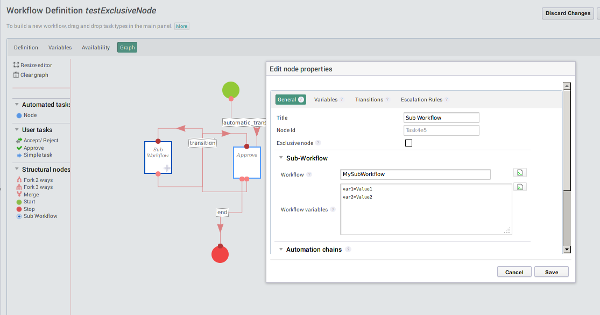

Release Notes
Release NotesFor Users
DAM
Bulk Tagging
In the bulk edit form, you can now add tags to the selected list of documents.

Asset Creation
When creating a new asset or bulk importing assets, you can choose the location where to import them. Only the folders where the user has the create permission are selectable.


Assets View
The view or edit layouts configured on the Document types (the ones you can configure on your own document type on Studio for instance) are displayed in the Metadata section.
Single Asset View
Improve the single asset view of an asset (new layout accessible through the permalink).

Misc Improvements
Now you can use the HTML5 DnD on the Bulk import form.
If your import fails for some reason (for instance, if you forgot to fill a required field), you get an appropriate error message and you don't have to select DnD files to import again.
Workflow
Escalation Rules
Escalation rules let you run an operation chain when a condition is true. These conditions are evaluated every 5 minutes by a configurable scheduler. They can be executed one time (default behaviour) or multiple times.

Sub-Workflow
We have added a new node called SubWorkflow. As you have already guessed it, it lets you embed sub-workflow into existing one. You can also give them parameters, escalation rules, input and output chains, and transitions, like a regular node.

Exclusive Node
When the workflow engine runs an exclusive node, it evaluates the transitions one by one and stops at the first one evaluated to true.

New Workflow Operations
We've added new operations to cancel a workflow, resume a node, get the opened tasks, and complete a task and also improved the Start Workflow and Set Workflow variable operations.
Video
The video.js player has been updated to version 4.1.0. This will enable us to benefit from their new plugin architecture. The first plugin we've integrated shows thumbnails of the video while hovering on the progress bar.

Ergonomy and UX
Tables, forms and layout have been reviewed and simplified. A focus has been added to simplify the fill of inputs and make the document edition smoother.
We have started to update the icons throughout the platform. This effort will continue until the next LTS release.
Translations
Some contributions have been integrated to Nuxeo. Thanks to Patrick Turcotte for the French (Canada) translation and to Jordi Mallach for the Catalan translation.